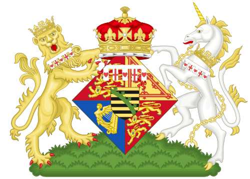

Posted to: The Google+ Heraldry Community
Posted by: Karl Wilcox
Created on: December 14 2012 at 19:20
Hats Off to "Sodacan"
The Wikimedia Commons pages are a fantastic resource of over 15 million media files. There is a very rich set of heraldic images, many of them produced by the user "Sodacan" (not, I suspect, their real name). Sodacan's images (like that of Princess Maud of Wales show below) are produced using Inkscape, in the SVG format and are freely available - I have re-used many of them (with appropriate credits) in my drawshield program. I am totally in awe of the superb quality of these images (see them all at
http://commons.wikimedia.org/wiki/User:Sodacan
).
Sodacan, I salute you!
